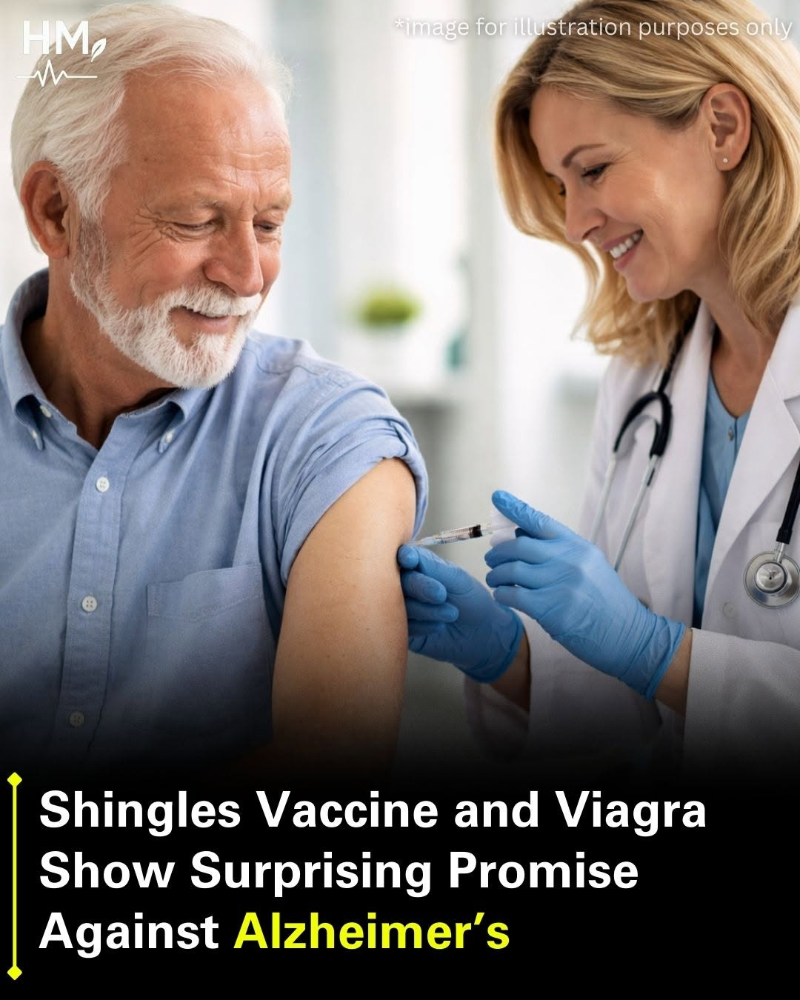

What if the key to slowing Alzheimer’s has been hiding in your medicine cabinet all along?
A new study led by the University of Exeter suggests three familiar drugs a shingles vaccine, Viagra, and a motor neurone disease medication may hold unexpected potential against Alzheimer’s disease. Published in Alzheimer's Research & Therapy and supported by Alzheimer's Society, researchers reviewed 80 existing medicines to see whether any could be repurposed to protect the brain.
For decades, Alzheimer’s research has focused on building new drugs from scratch, a process that can take 10–15 years and billions of dollars. But this international panel of 21 experts asked a different question: what if we already have something that works?
After multiple review rounds, three stood out:
- Zostavax — previously linked to a 16% lower dementia risk in vaccinated individuals.
- Sildenafil (Viagra) — shown in animal studies to improve memory and reduce toxic tau buildup.
- Riluzole — associated with improved cognition and lower tau levels in lab models.
The shingles vaccine emerged as the strongest candidate. It interacts with the immune system, a system increasingly believed to play a central role in Alzheimer’s progression. If future clinical trials confirm the signal, prevention strategies could shift dramatically.
There’s no cure yet. But this approach repurposing safe, widely used medicines, could accelerate progress in ways we haven’t seen before.
If a routine vaccine or common prescription could lower your Alzheimer’s risk, would you want to know and would you take it?
Source: Corbett A, Sultana J, Stych K, et al. Drug repurposing for Alzheimer’s disease: a Delphi consensus and stakeholder consultation. Alzheimer’s Research. 2025.
*image for illustration purposes only
